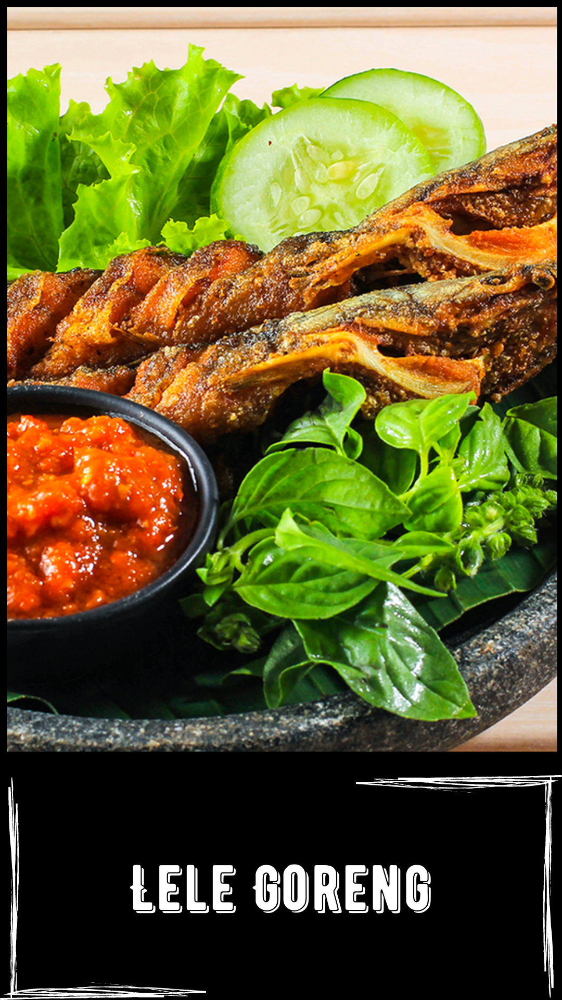

Resep:
Cuci bersih lele, kucuri jeruk nipis.
Setelah bersih, lumuri lele dengan kunyit bubuk, ketumbar bubuk, bawang putih bubuk, dan garam hingga merata.
Diamkan kurang lebih 30 menit agar bumbu meresap.
Lalu, goreng lele dengan minyak panas.